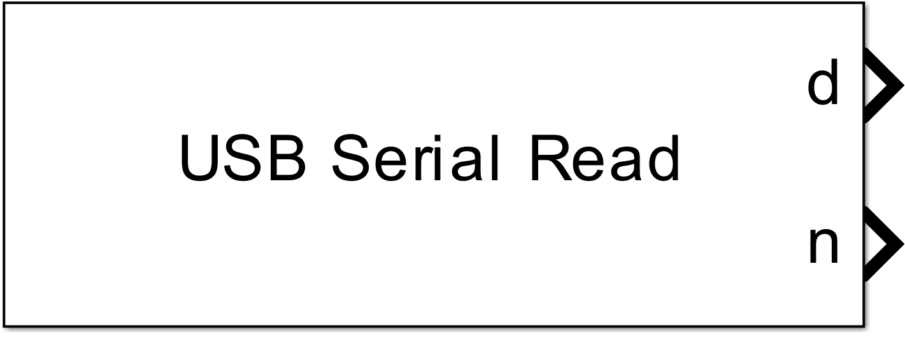
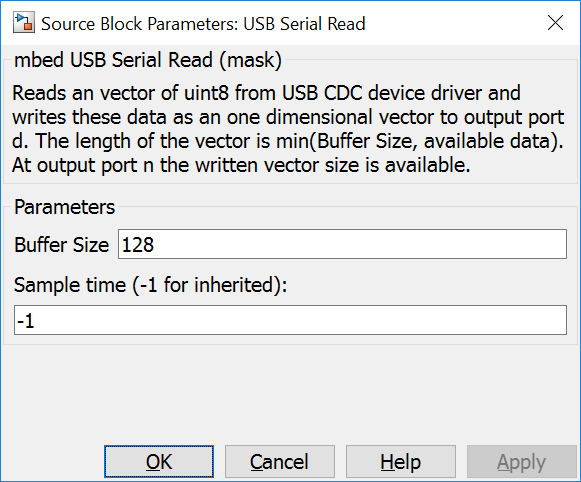

5.2.2. USB CDC Read
5.2.2.1. Description
Reads an vector of uint8 from USB CDC device driver and writes these data as an one dimensional vector to output port d. The length of the vector is min(Buffer Size, available data). At output port n the written vector size is available.
{kind=link}
5.2.2.2. Data Type Support
The output port d writes a one dimensional vector with uint8 data type and output port n with uint32.
5.2.2.3. Parameters Dialog Box
Buffer Size
Static allocated buffer for reading data from USB CDC driver. The USB CDC driver uses internally an 128 buffer (mbed v130).
Sample Time
specifies the time interval between samples. To inherit the sample time, set this parameter to -1.
5.2.2.4. Example
In the example data read from USB CDC driver input are written back to the USB CDC driver output without modification.

5.2.2.5. Code Generation
Global parts
creates somes lines in void <Model Name>_step(void) function
for(uint_T ii=0; ii<length_of_data; ii++) { // length_of_data is initialised with the minimum of (Buffer Size, available data from the USB CDC driver)
*ptr++ = usbSerial._getc(); // ptr points to the output signal buffer
}
in <Model Name>.cpp.